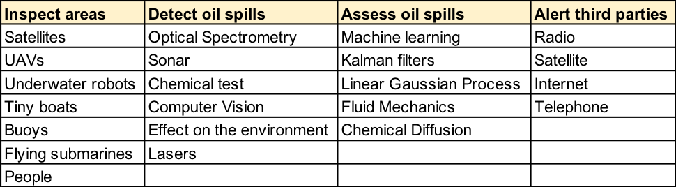
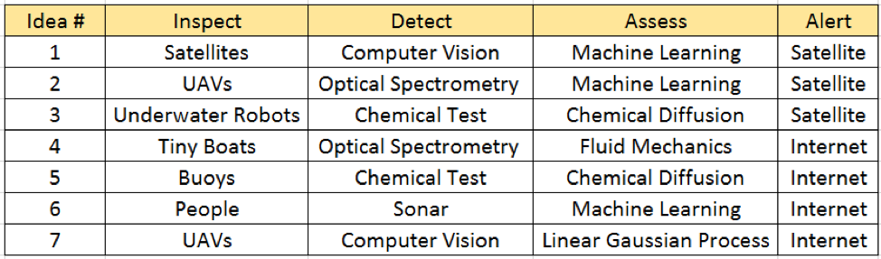
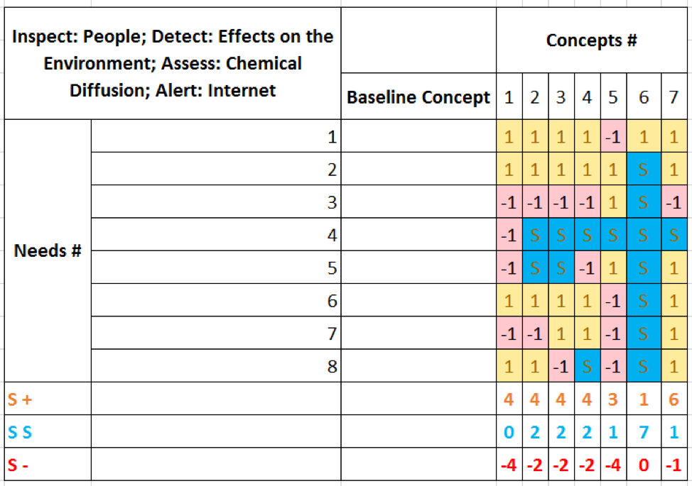

Initially, we wanted to see what solutions for detecting oil spills were already out there in the industry. We noticed some good ideas, like for example the use of sonars to by the help of sound waves detect oil in the water, which could indicate an oil spill [8]. This kind of technology was used in the BP disaster to track where in the 1500 m depth the oil pipe had bursted. The external search also included looking into applicable technologies that could be used as subsystems. Technologies included light analysis with lasers such as spectroscopy to detect oil, current drone technology, and how machine learning could be applied.
However since we are aerospace students, we looked into existing ideas about systems including satellites, UAVs, underwater planes, in order to include and apply the area of knowledge our education has provided. The external search conclusion can briefly be presented as the following concepts:
We began our internal search with an informal “anything goes” brainstorming session. We simply listed any ideas that came to mind without yet considering feasibility or performance. This gave us the following “what if” list of concepts:
From this list, we filtered out ideas we felt were unreasonable and sorted the remaining ideas based on four components:
Note that, although we are apparently "adding" inspection as a function of our system, we still had this in our functional analysis; however, for the purposes of that analysis, we simply included inspection as a sub-function of detection. Note also that explanations of some technical terms are given below the table.
Definitions:
A patent represents an exclusive right to prevent others from exploiting an invention. Patents registered in the US are valid only in the US and are granted by the federal government for a duration of twenty years.
Note that a patent is not the same as prior art. A patent refers to a specific and detailed implementation of ideas, whereas prior art refers to a more general concept. For example, a flying machine is prior art and is not patentable. However, a small technical device within the flying machine would be patentable.
We determined that no component of Project Spillcry in its current form would be patentable. This is due to the broadness of the concept in its current state. A concept as broad as ours would not end up being patentable by the US Patent Office. Further, although we found no existing patents precisely matching our concept, we as a team simply lack the knowledge and resources necessary to pursue a patent.
As a team, we discussed the various concepts shown above and ways in which we could combine these concepts. This generated a list of seven possible system concepts, each using a different combination of methods to inspect, detect, assess, and alert.
We then compared these concepts using a Pugh Matrix. This is a concept selection approach that ranks each concept subjectively when compared to a certain baseline concept. Here, the baseline concept used is a system in which humans detect oil spills by their effects on the surrounding environment, assess the spills using chemical diffusion tests, and alert third parties via the internet. Needs are listed by number on the left side of the Pugh Matrix and each concept is given a score: +1 if the concept exceeds performance of the the baseline concept relative to that need, -1 if it does not exceed, and S if it is equivalent in performance to the baseline concept.
Based on this analysis, it is clear that the best concept is number 7, as this exceeds the baseline concept's performance in six out of the eight needs, falling behind the baseline concept in only one. And with this, we had the beginning of a final concept: UAVs that detect oil spills with computer vision and assess them using linear Gaussian approximation, while communicating via the internet.
{kind=link}
{kind=link}